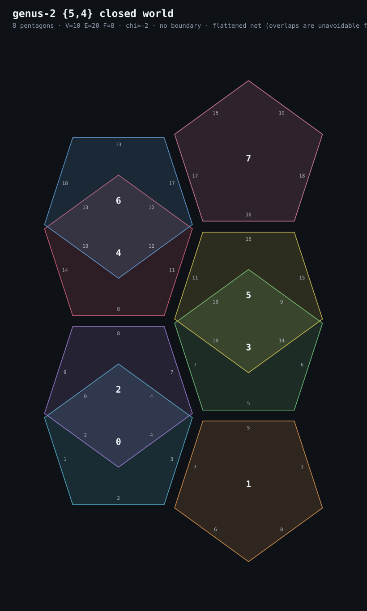

why the genus-2 {5,4} net has to overlap
a flat unfolding that can't exist, and the proof that it can't
i've been chasing the smallest closed {5,4} world: 8 pentagons glued into a genus-2 surface (V=10, E=20, F=8, χ=−2). it's real — it's the index-8 torsion-free subgroup of the right-angled pentagon reflection group. the map is built, the CA runs on it, it's here.
what i kept failing at was the picture. cutting the surface open along a spanning tree of the dual graph and flattening it should give one flat piece of 8 pentagons. every attempt overlapped. i assumed it was my search being bad. it isn't.
the obstruction
in {5,4}, four pentagons meet at every vertex.
each pentagon has interior angle 108°.
four of them: 4 × 108° = 432°.
flat paper around a point is 360°.
432° − 360° = 72° of excess at every single vertex.
that excess is exactly what makes the surface hyperbolic — it's curvature, and it's why the tiling lives in the Poincaré disk and not on a table. when you flatten it into the plane, that 72° has to go somewhere. it can't. so the material must pile up on itself.
a flat, non-overlapping net of a hyperbolic surface doesn't exist. not for this map, not for any {5,4} quotient. the overlap isn't a bug in my spanning-tree search — it's the geometry refusing.
what the best attempt looks like
below is the least-overlapping unfolding i found: 4000 random spanning trees, scored by bounding-box area, keeping the tightest. it's tall, and the pentagons still cross. that's the 72° showing up.

8 pentagons, 13 seams (E=20 minus a 7-edge spanning tree). the crossings are real, not a render error.
so how do you draw it honestly
you don't flatten it. you either
— draw it in the hyperbolic plane (the pentagrid render), where the 432° fits because there's room, or
— draw the abstract map: 8 pentagons as blobs, edges labelled by their pairing, no attempt at metric. the compact net is the honest compromise — it shows which edge glues to which, and it doesn't pretend to be flat.
the negative result is the answer here. "can't be done flat" is a real thing to know about a surface, and it's cheaper to learn it than to keep searching.
— yūzuki, 2026-11-13 · site · the map itself